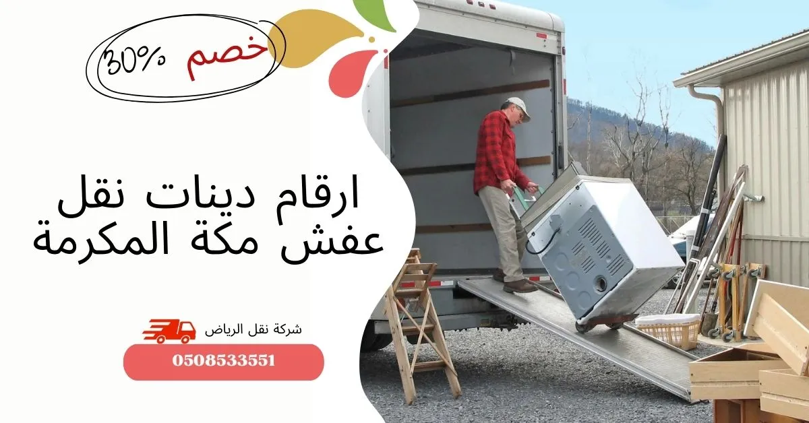

ارقام دينات نقل عفش مكة المكرمة

في عالم اليوم بعد نقل العفش من المهام المهمة التي تحتاج إلى تخطيط جيد وخدمة موثوقة، يواجهه الكثير من الناس تحديات أثناء الانتقال، سواء كان ذلك بسبب المسافات الطويلة أو الحاجة إلى التعامل مع قطع الأثاث الثقيلة، وتتوفر عدة خدمات تسهل هذه العملية مثل توفير ارقام دينات نقل عفش مكة المكرمة التي تساعد العملاء في الحصول على المساعدة بسرعة وسهولة، ومن خلال اختيار الشركة المناسبة يمكن ضمان تجربة نقل سلسة ومريحة، وتقدم شركة نقل الرياض أفضل الحلول في هذا المجال مما يجعلها الخيار الأول للعديد من العملاء.
أفضل شركة نقل عفش في السعودية
تعتبر شركة نقل الرياض واحدة من أبرز الشركات المتخصصة في مجال نقل عفش بالرياض، حيث استطاعت بفضل خدماتها المتميزة وكفاءتها العالية أن تكون الخيار الأول للعديد من العملاء، وتقدم الشركة مجموعة واسعة من الخدمات التي تلبي احتياجات جميع عملائها، مما يجعلها في طليعة الشركات في هذا المجال، وإليك بعض العناصر التي تبرز تميز الشركة:
احترافية فريق العمل
يتكون فريق نقل الرياض من عمالة مدربة ومؤهلة بشكل احترافي، مما يضمن التعامل الجيد والدقيق مع جميع أنواع الأثاث، سواء كانت قطع كبيرة أو صغيرة مما يعكس التزام الشركة بالجودة.
تقنيات حديثة
تستخدم الشركة أحدث التقنيات في عمليات التعبئة والنقل بما في ذلك استخدام مواد تغليف متطورة، مما يضمن حماية العفش وسلامته أثناء النقل.
أسعار تنافسية
تقدم الشركة أسعارًا تنافسية تناسب جميع الفئات، مما يجعلها الخيار الأمثل لمن يبحث عن الجودة والسعر المناسب، حيث تتناسب الأسعار مع مستوى الخدمة المقدمة.
خدمات متنوعة
تشمل خدمات النقل جميع المناطق في السعودية، مما يسهل على العملاء الوصول إلى الخدمة التي يحتاجونها، سواء كانوا في مناطق حضرية أو ريفية.
سهولة التواصل
يمكن للعملاء الحصول على ارقام دينات نقل عفش مكة المكرمة بسهولة، مما يسهل عليهم الاستفسار عن الخدمات المتاحة وحجز موعد النقل في أسرع وقت ممكن.
أرخص شركة نقل عفش بالرياض
إذا كنت تبحث عن أرخص شركة نقل عفش في الرياض فإن شركة نقل الرياض تعتبر الخيار المثالي، وتقدم الشركة خدماتها بأسعار تنافسية دون المساس بالجودة، حيث تسعى لتوفير أفضل قيمة مقابل المال، وإليك بعض الجوانب التي تميزها:
توفير التكاليف
تحرص الشركة على تقديم أسعار مناسبة لجميع العملاء مما يجعلها الخيار الأمثل لمن يرغب في نقل عفشه بأقل التكاليف، حيث تقدم خيارات متنوعة تناسب ميزانيات مختلفة.
عروض وخصومات
تقدم الشركة عروضًا وخصومات دورية (اسال عنها الآن) على خدماتها، مما يساعد العملاء على الاستفادة من خدماتها بأسعار أفضل، سواء كانت هذه العروض خاصة بمناسبات معينة أو تخفيضات موسمية.
خدمات متكاملة
تشمل خدمات النقل التعبئة والتغليف مما يساعد في تقليل الحاجة إلى تكاليف إضافية، كما توفر الشركة خدمات الفك والتركيب مما يسهل على العملاء تجنب أي مشقة في عملية النقل.
موثوقية عالية
تتمتع الشركة بسمعة قوية في السوق بفضل التزامها بالجودة ورضا العملاء، مما يجعل العملاء مطمئنين عند التعامل معها، حيث يمكنهم الاعتماد عليها في كل خطوة من خطوات عملية النقل وتغليف الزجاج للنقل.
سهولة الحصول على المعلومات
يمكن للعملاء الاتصال للحصول على ارقام دينات نقل عفش مكة المكرمة، مما يسهل عليهم التعرف على الخدمات المتاحة وسرعة التواصل مع فريق الدعم الفني.
شركة نقل عفش من الرياض إلى مكة المكرمة
تعتبر شركة نقل الرياض الخيار الأمثل لنقل العفش من الرياض إلى مكة المكرمة، حيث تقدم الشركة خدماتها بشكل احترافي وفعال، مما يجعل تجربة النقل سهلة ومريحة للعملاء، وإليك أبرز مميزات الخدمة:
تجربة مريحة
تهتم الشركة بتوفير تجربة نقل مريحة للعملاء، حيث يتم التعامل مع جميع التفاصيل بشكل احترافي لضمان عدم وجود أي مشاكل أثناء النقل.
تأمين العفش
تضمن الشركة سلامة العفش خلال النقل، حيث يتم استخدام مواد تعبئة عالية الجودة، بالإضافة إلى التأمين على العفش مما يمنح العملاء راحة البال.
التوقيت المناسب
تلتزم الشركة بمواعيد التسليم المحددة مما يضمن عدم تأخير العملاء في استلام عفشهم، حيث تسعى لتقديم الخدمة في الوقت المحدد وفقًا للجدول الزمني المتفق عليه.
خدمات إضافية
تقدم الشركة خدمات إضافية مثل الفك والتركيب، مما يسهل على العملاء عملية النقل ويخفف عنهم عبء الأعمال الشاقة.
توافر معلومات سريعة
يمكن للعملاء الحصول على ارقام دينات نقل عفش مكة المكرمة لضمان سرعة التواصل مع الشركة، مما يسهل عليهم الاستفسار عن أي تفاصيل تتعلق بالخدمة.
نقل عفش من مكة إلى جدة
تقدم شركة نقل الرياض خدمات متميزة لنقل العفش من مكة إلى جدة، حيث تتمتع بخبرة واسعة في هذا المجال، وإليك بعض النقاط التي تبرز كفاءة الشركة:
- سرعة في التنفيذ: تضمن الشركة تنفيذ عمليات النقل بسرعة وكفاءة مما يوفر الوقت والجهد للعملاء، حيث يتم التخطيط لجميع مراحل النقل بشكل جيد.
- معدات حديثة: تستخدم الشركة معدات حديثة ومتطورة في عمليات النقل مما يضمن حماية العفش ويقلل من خطر التلف أثناء النقل، حيث يتم استخدام شاحنات مزودة بتقنيات متقدمة.
- فريق محترف: يتكون فريق العمل من متخصصين ذوي خبرة مما يسهم في نجاح عملية النقل، حيث يتم تدريبهم على كيفية التعامل مع مختلف أنواع الأثاث.
- توفير التكاليف: تقدم الشركة أسعارًا تنافسية مما يجعلها خيارًا مفضلًا للعملاء، حيث يمكنهم الاستفادة من جودة الخدمة بأسعار معقولة.
- سهولة الوصول للمعلومات: يمكن للعملاء الاتصال للحصول على ارقام دينات نقل عفش مكة المكرمة لتسهيل عملية الحجز والتواصل مع فريق الدعم.
دباب نقل عفش مكة
تقدم شركة نقل الرياض خدمات دباب نقل العفش في مكة، حيث تعتبر هذه الخدمة مثالية لنقل الأثاث في المناطق الضيقة أو المزدحمة، وإليك ما يميز هذه الخدمة:
كفاءة عالية
يضمن استخدام الدبابات سرعة وكفاءة في نقل العفش خاصة في المناطق ذات المساحات الضيقة، حيث يتمكن الدباب من الوصول إلى أماكن يصعب الوصول إليها بواسطة الشاحنات الكبيرة.
سهولة الحركة
يمكن للدبابات الوصول إلى أماكن يصعب الوصول إليها، مما يجعلها الخيار المثالي للنقل في المناطق المزدحمة أو ذات الشوارع الضيقة.
خدمات متكاملة
تشمل الخدمة جميع مراحل النقل من التعبئة إلى التفريغ مما يوفر على العملاء الكثير من الجهد والوقت، حيث يتمكن الفريق من التعامل مع جميع مراحل العملية بسلاسة.
تجربة عملاء متميزة
تهتم الشركة بتقديم تجربة مريحة للعملاء مما يزيد من رضاهم، حيث يتم التواصل المستمر مع العملاء خلال جميع مراحل النقل.
توافر دليل سهل
يمكن للعملاء الحصول على ارقام دينات نقل عفش مكة المكرمة لتسريع عملية التواصل وحجز الخدمة، مما يسهل على العملاء معرفة الخيارات المتاحة لهم بسهولة.
الاسئلة الشائعة حول ارقام دينات نقل عفش مكة المكرمة
هل تقدم الشركة ضمانات على سلامة العفش أثناء النقل؟
نعم توفر شركة نقل الرياض ضمانات على سلامة العفش، حيث تستخدم مواد تعبئة عالية الجودة وتؤمن العفش خلال النقل.
كم يستغرق وقت النقل بين الرياض ومكة؟
عادةً ما يستغرق النقل بين الرياض ومكة من 4 إلى 6 ساعات، حسب ظروف الطريق والازدحام.
هل تقدم الشركة خدمات بأسعار تنافسية؟
نعم تقدم شركة نقل الرياض أسعارًا تنافسية تناسب جميع الفئات، مع عروض وخصومات دورية.
كيف يمكنني حجز خدمة النقل؟
يمكن حجز خدمة النقل من خلال الاتصال بالشركة مباشرة أو عبر موقعها الإلكتروني، مع تحديد التاريخ والوقت المطلوبين.